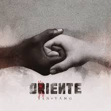

Sobre a Banda
A Oriente é um grupo brasileiro de rap criado em 2009, no Rio de Janeiro. O grupo conquistou espaço no cenário musical ao unir elementos do rap, reggae e MPB, trazendo letras sobre liberdade, amizade, amor e reflexões sobre a vida. Com um estilo marcante e uma legião de fãs, a banda se tornou uma das grandes referências do rap nacional contemporâneo.
Principais musicas
🎵 Desorientado (2011)
O Vagabundo e a Dama
Vagabundo Também Ama
Quem Sou Eu
🎵 Oriente Acústico (2014))
Vida Longa Mundo Pequeno (Acústico)
Essa Eu Fiz Pra Você (Acústico)
Praia do Rosa (Acústico)
🎵 Yin Yang (2017)
Linda, Louca e Mimada
Fugir Com o Sol
Essa Eu Fiz Pra Você
Principais Álbuns

Desorientado
Oriente Acústico
